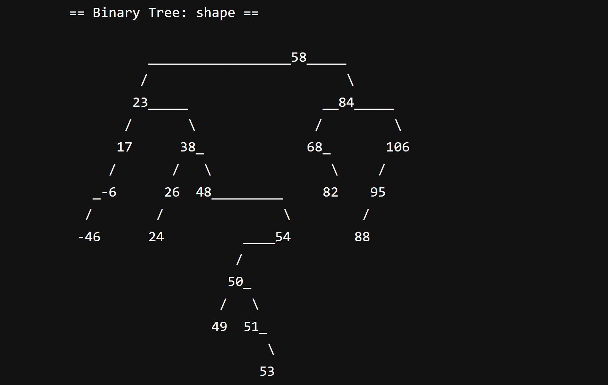

BST-AVL Visualiser
This is a Python-based application that implements both Binary Search Tree (BST) and AVL Tree data structures. It provides an interactive command-line interface for users to create, manipulate, and visualize tree structures.
1
Technology Used
4
Key Features
Tech Used

Key Features
- Tree visualisation that displays ASCII art representation of the tree structure showing tree shape and connections between nodes
- Calculates and prints multiple tree traversal methods including pre-order, in-order, post-order and inverse in-order (BST only)
- Dynamic tree manipulation where the user can insert new nodes and delete existing nodes and the tree will automatically rebalance itself
- Has tree analysis features that allow users to display leaf and non-leaf nodes, calculate the depth of nodes and subtrees, count total nodes in subtrees and show the balance factors (AVL tree only)